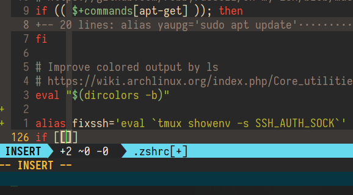

我又双迁移到 NeoVim 了
两年前，我曾在技术博客发表过《用 Neovim 取代 Vim》，但当时我很快又放弃 NeoVim 了，继续用 Vim。因为我始终没找到令我满意的 NeoVim 的 GUI；再次，Ubuntu 16.04 没有打包 NeoVim，每次在新开发机上部署开发环境编译安装 NeoVim 也很麻烦；最后，Vim 7.5 也支持异步并发 API，以致我不太青睐 NeoVim 了。
其实我之所以一定要用 GUI，因为我一直没真正配置好虚拟终端，终端多路复用器和文本编辑器的色彩，导致 Vim 在虚拟终端和多路复用器会话里显示的色彩非常怪异，所以我实际上过去一直只用 GVim，不爱用 Vim。一月半前，在机缘巧合的他人帮助下，我正确配置好了 Vim 的 256 color，以致以后不论在本地还是远程主机上，都可以直接在虚拟终端下愉快地用 Vim 开发了，这也间接地为后来的迁移大作战扫除了障碍。
一月前，我偶然读到Vim 8 下 C/C++ 开发环境搭建，里面介绍了众多令人叹为观止的现代 Vim 插件，有些需要在 NeoVim 上才能用。于是我心血来潮，又双迁移到 NeoVIm 了，并且迁移大作战成功！
其间我发现 NeoVim 本身已经编译好了 Linux 上通用的二进制包，直接下载 nvim.appimage（版本为目前最新的 3.1）到 $HOME/.local/bin 并命名为你喜欢的即可，当然别忘了修改其为可执行文件。这样以后只要如此少量的命令，就可以快速在开发机上部署新开发环境了，毕竟不比安装发行版的 Vim 二进制包麻烦多少，何况 Ubuntu 16.04 发行版提供的二进制包 Vim 版本还处于 7.4 时代，老掉牙。
我再重新解说下迁移到 NeoVim 的好处：
全面并发
虽说 Vim 8 也支持了，但这当初应该是 NeoVim 倒逼 Vim 出来的，不可忽略。此外在全面并发的支持下，vim-plug 安装我高达三十多个的插件，不到半分钟！这可怕的速度在以前 Vim 时代是不可想象的。Vim 8 下 C/C++ 开发环境搭建 里面提到的很多强大插件，也实实在在得到了全面的速度提升好处。
默认配置更加友好
说起来 Vim 的一些过时默认配置会让你大吃一惊，比如它默认的 encoding 至今依然是 latin1 ！Neovim 当然早改用 utf-8 了。还有[一些不合时宜的默认 setting 也纷纷得到了修改] Vim 8 下 C/C++ 开发环境搭建(https://neovim.io/doc/user/vim_diff.html#nvim-defaults)，免去用户手动配置之苦，我就在迁移原 .vimrc 时删去了 25 行多，净化完毕，更加极简！
充分遵循 XDG 规范
Vim 默认的 .vimrc 和 .vim 均一般在 $HOME 下，Neovim 则全挪为 $XDG_CONFIG_HOME/nvim/init.vim 和 $XDG_CONFIG_HOME/nvim.
Vim 编辑文件时，可以有多达四个的数据文件：backup, swapfile, undofile 和 viminfo. Unix 下的 Vim 分别默认存在 ".,~/tmp,~/", ".,~/tmp,/var/tmp,/tmp", ".", 其中 viminfo 的具体储存位置我一时还查不出来，就懒得深究了。后来依云指出：undofile 默认没有值，不保存撤销记录，viminfo 位于用户目录。
NeoVim 则全改储存在 $XDG_DATA_HOME/nvim/ 下各自的目录里，此外 viminfo 更是被抛弃，被叫 ShaDa 且更为先进的二进制文件所代替，后者位于 $XDG_DATA_HOME/nvim/shada/main.shada.
再加上用户自行安装的 NeoVim 二进制包也在 $HOME/.local/bin 里，一家人更加整整齐齐。
完美无瑕的真彩
具体详见在 Linux 下全面使用真彩。

那么问题来了：怎么迁移？
Arch Linux 用户都装 neovim, python-neovim 和 python2-neovim. Ubuntu 用户下载官方编译好的二进制包并更改为 $HOME/.local/bin 的可执行文件。
除非你用干净的 dotfiles 管理 Vim, 否则自行清理插件；再迁移到 XDG 目录下；改用支持 Neovim 的 vim-plug 并重新安装所有插件，可以先按 https://github.com/junegunn/vim-plug/wiki/tips#automatic-installation
加入相关代码，以致只要一打开 NeoVim 它就会自动安装包管理器本身和所有包，超方便的；按 vim-difference 来打扫 init.vim 中已无用的设置。
Written with StackEdit.